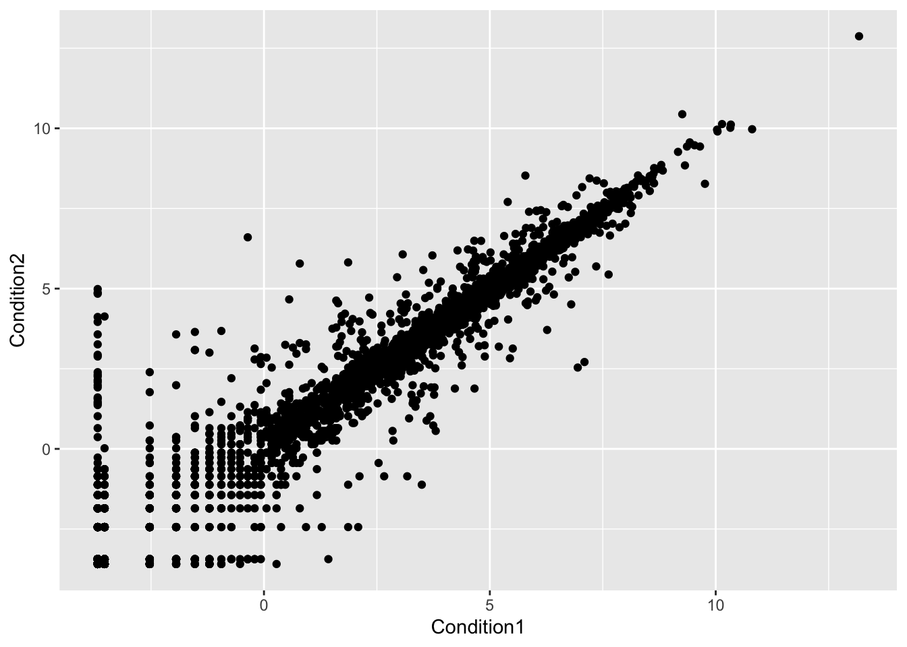
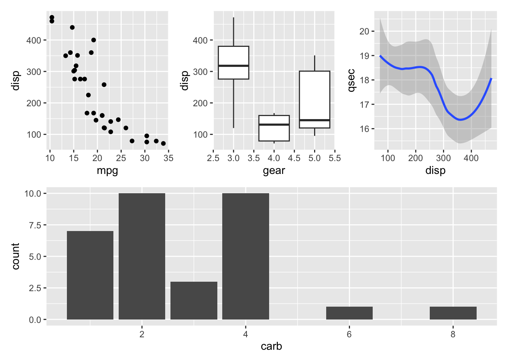

head(cars) speed dist
1 4 2
2 4 10
3 7 4
4 7 22
5 8 16
6 9 10R has tones of different graphics systems. These include “base R” (e.g. the plot() function) and add on packages like ggplot2
Let’s start with plotting a simple dataset in “base R” and then ggplot2 to see how they differ.
head(cars) speed dist
1 4 2
2 4 10
3 7 4
4 7 22
5 8 16
6 9 10To plot this in base R, I just use plot()
plot(cars)
First to use ggplot2 I need install the package. For this I use the install.packages() function.
I don’t want to run
install.packages()in my quarto documents as this would re-install the package every time I render the document. So install it at the Console section.
The main function in the ggplot2 package is ggplot(). Before i can use this function I need to load the package with a library() call.
library(ggplot2)
ggplot(cars)
There are at least 3 things that every ggplot needs:
ggplot(cars) +
aes(x=speed, y=dist) +
geom_point()
p1 <- ggplot(cars) +
aes(x=speed, y=dist) +
geom_point() +
geom_smooth(method = "lm")p1`geom_smooth()` using formula = 'y ~ x'p1 + labs(title="My nice GGPLOT",
x="Speed (MPH)",
y="Stopping Disctance") +
theme_bw()`geom_smooth()` using formula = 'y ~ x'url <- "https://bioboot.github.io/bimm143_S20/class-material/up_down_expression.txt"
genes <- read.delim(url)
head(genes) Gene Condition1 Condition2 State
1 A4GNT -3.6808610 -3.4401355 unchanging
2 AAAS 4.5479580 4.3864126 unchanging
3 AASDH 3.7190695 3.4787276 unchanging
4 AATF 5.0784720 5.0151916 unchanging
5 AATK 0.4711421 0.5598642 unchanging
6 AB015752.4 -3.6808610 -3.5921390 unchangingQ. Use the nrow() function to find out how many genes are in this dataset. What is your answer?
nrow(genes)[1] 5196Q. Use the colnames() function and the ncol() function on the genes data frame to find out what the column names are (we will need these later) and how many columns there are. How many columns did you find?
ncol(genes)[1] 4Q. Use the table() function on the State column of this data.frame to find out how many ‘up’ regulated genes there are. What is your answer?
sum(genes$State =="up")[1] 127table(genes$State)
down unchanging up
72 4997 127 Q. Using your values above and 2 significant figures. What fraction of total genes is up-regulated in this dataset?
table(genes$State) / nrow(genes) * 100
down unchanging up
1.385681 96.170131 2.444188 Q. Complete the code below to produce the following plot
ggplot(genes) +
aes(x=Condition1, y=Condition2) +
geom_point()
ggplot(genes) +
aes(x=Condition1, y=Condition2, col=State) +
geom_point() +
scale_color_manual(values = c("blue", "grey", "red"))
p2 <- ggplot(genes) +
aes(x=Condition1, y=Condition2, col=State) +
geom_point() +
scale_color_manual(values = c("blue", "grey", "red"))p2 + labs(title="Gene expression change upon drug treatment",
subtitle = "RNAseq data",
x= "Control (no treatment)",
y= "Drug treatment")We can get exposure to setting more aes() parameters with datasets that include more columns of useful data. For example the gapminder dataset on GPD and life expendency for different countries over time.
url <- "https://raw.githubusercontent.com/jennybc/gapminder/master/inst/extdata/gapminder.tsv"
gapminder <- read.delim(url)How many entries (i.e. rows)
nrow(gapminder)[1] 1704Have a wee peak ar the first 6 rows
head(gapminder) country continent year lifeExp pop gdpPercap
1 Afghanistan Asia 1952 28.801 8425333 779.4453
2 Afghanistan Asia 1957 30.332 9240934 820.8530
3 Afghanistan Asia 1962 31.997 10267083 853.1007
4 Afghanistan Asia 1967 34.020 11537966 836.1971
5 Afghanistan Asia 1972 36.088 13079460 739.9811
6 Afghanistan Asia 1977 38.438 14880372 786.1134How many unique countries are there in the dataset?
length(unique(gapminder$country))[1] 142What years does the dataset cover?
table(gapminder$year)
1952 1957 1962 1967 1972 1977 1982 1987 1992 1997 2002 2007
142 142 142 142 142 142 142 142 142 142 142 142 Key function that will be useful in our R ourney include:
ggplot(gapminder) +
aes(x=gdpPercap, y=lifeExp, col=continent, size=pop) +
geom_point(alpha=0.3)
ggplot(gapminder) +
aes(x=gdpPercap, y=lifeExp, col=continent) +
geom_point(alpha=0.3)+
facet_wrap(~continent)library(patchwork)Warning: package 'patchwork' was built under R version 4.3.3# Setup some example plots
p1 <- ggplot(mtcars) + geom_point(aes(mpg, disp))
p2 <- ggplot(mtcars) + geom_boxplot(aes(gear, disp, group = gear))
p3 <- ggplot(mtcars) + geom_smooth(aes(disp, qsec))
p4 <- ggplot(mtcars) + geom_bar(aes(carb))
# Use patchwork to combine them here:
(p1 | p2 | p3) /
p4`geom_smooth()` using method = 'loess' and formula = 'y ~ x'